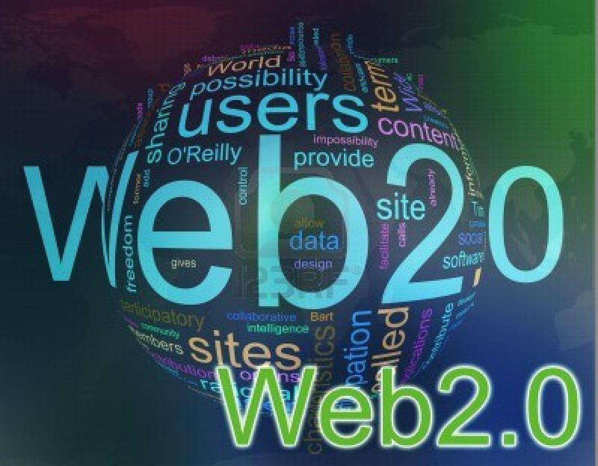

✍️ Web 2.0 (2004-2016) - The Read-Write Web

Web 2.0 transformed the internet from static pages into an interactive, social experience. Users became content creators, not just consumers. This era introduced social media, user-generated content, and collaborative platforms.
🔑 Key Characteristics of Web 2.0
- Read-Write - Users can both consume and create content
- Social interaction - Comments, likes, shares, follows
- User-generated content - Anyone can post, upload, review
- Centralized platforms - Companies control user data
- Rich user experience - AJAX made pages dynamic without reloading
📱 Major Web 2.0 Platforms
📘 Facebook
🐦 Twitter (X)
📸 Instagram
▶️ YouTube
💼 LinkedIn
📝 Wikipedia
📱 WhatsApp
🎵 Spotify
📧 Gmail
🔍 Google
⚙️ Technologies That Enabled Web 2.0
- AJAX - Asynchronous JavaScript and XML (no page reloads)
- CSS3 - Better styling and responsive design
- JavaScript frameworks - jQuery, React, Angular
- APIs - Allowed apps to talk to each other
- RSS feeds - Subscribe to content updates
📊 Web 1.0 vs Web 2.0
- Web 1.0 - Read-only, static pages, owned content
- Web 2.0 - Read-write, interactive, shared content
← Back to all terms